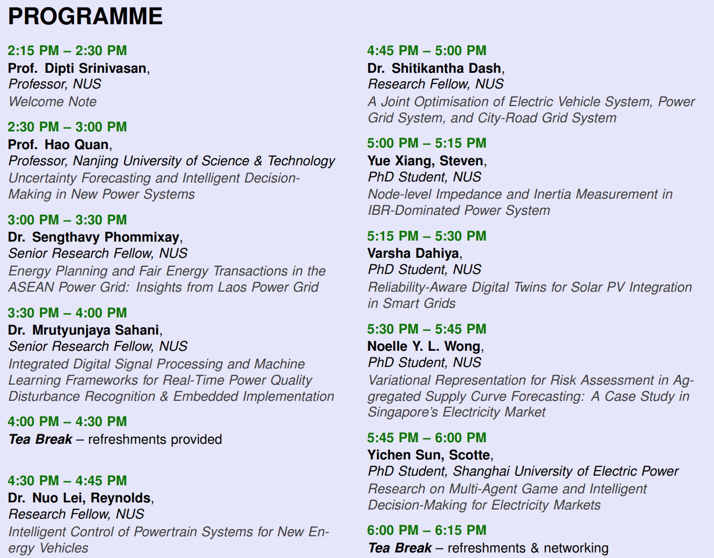

The Centre for Green Energy Management and Smart Grid (GEMS) at the National University of Singapore, in collaboration with the IEEE Power and Energy Society (PES) NUS Student Branch Chapter, warmly invites researchers, students, and members of the power and energy community to join the 2026 NUS-GEMS Workshop on the Future of Smart Grid.
The half-day workshop will be held in person on Wednesday, 2 September 2026, from 2:15 PM to 6:15 PM at Seminar Room 2, E7-03-07, College of Design and Engineering, National University of Singapore. Hosted by Prof. Dipti Srinivasan, the workshop will focus on the theme “Intelligent Decision-Making for Coordination of Distributed Energy Resources in Smart Grids.”

The programme brings together speakers from NUS and other academic institutions to share perspectives on emerging challenges and opportunities in modern power and energy systems. Topics include uncertainty forecasting and intelligent decision-making in new power systems, energy planning and fair energy transactions in the ASEAN Power Grid, power quality monitoring and embedded intelligence, electric vehicles and powertrain systems, smart grid optimisation, inverter-based power systems, digital twins for solar PV integration, and electricity markets.
The workshop will also feature presentations by members of the GEMS research community, providing an opportunity to showcase ongoing research and exchange ideas across different areas of smart grids and intelligent energy systems. The programme includes two networking breaks, offering participants opportunities for discussion and interaction with speakers and fellow attendees.
We warmly encourage all researchers, students, and anyone interested in smart grids and intelligent energy systems to join us for this engaging afternoon of presentations, discussions, and networking. Registration is now open, and we look forward to welcoming you to the workshop!